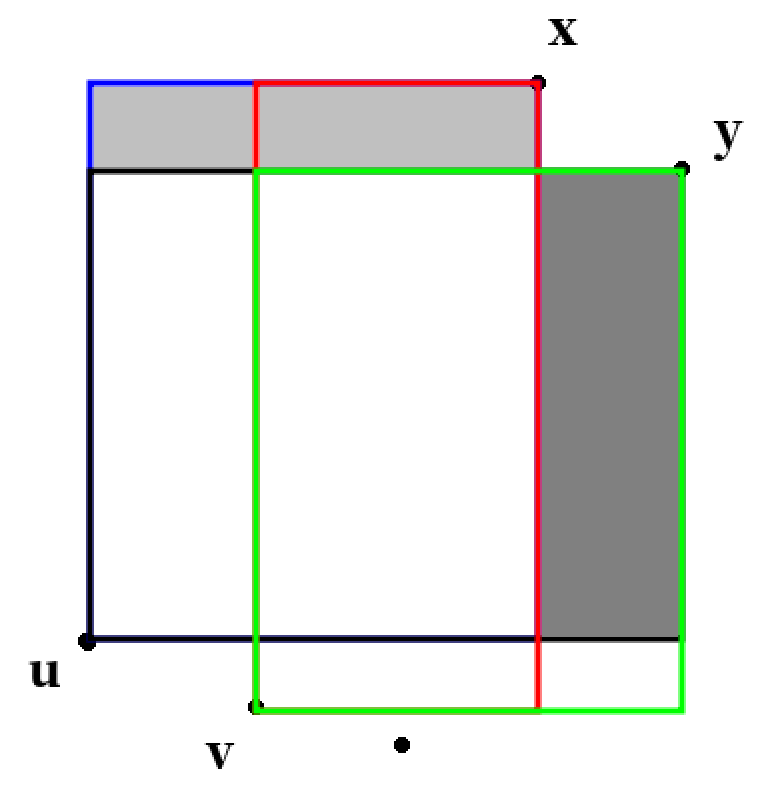

2021 省选三轮跟训日志 1
文章目录
所谓跟训日志，就是说我是不打省选第三轮的（因为四川没有第三轮）。
矩阵
有一个的矩阵，初始时为全。每次你可以选一个行的子集和列的子集，把所有（）变成。
要求在不超过次操作内让（）是，其他全部变成。
输出步骤。
。
二进制划分 分治
这题的部分分可以分治，每次将左下和右上的矩阵干掉，这样就变成了两个互不相关的子问题，可以同步解决。
先考虑一个相关的问题 A：
让的是，其他都变成。也就是说我们要选中所有的二元组。
考虑按位划分。对于行号和列号（即）枚举二进制下第位，将第位为的放入集合，其他的放入集合。那么我们让做一次操作，再让做一次操作。这样的操作次数是的。容易证明它可以选中所有的二元组。
那么回到原问题。我们能否将原问题转化为上述问题？
考虑将列（或者行）奇偶分组。这时你会发现原问题被分解为了两个规模是的问题 A。不过这两个不一定能同步做，因此操作次数上界是的。还是太多。
我们考虑做一个优化，使得只需要这一次操作，不需要。
容易发现行号和列号不一定是，只需要保证互不相同，且对角线上的元素的行号和列号相同即可。
那么我们找一组数，使得其中的任意两个数满足：
- 存在使得的二进制第位为，的二进制第位为；
- 存在使得的二进制第位为，的二进制第位为。
这样就意味着，当我们枚举到时，会被选中，当枚举到时，会被选中。因此就不需要这一步操作了。
不妨考虑所有位，有个的二进制数。由于，可以胜任。将这些数作为行号和列号，可以在次操作内完成任务。
有一些细节问题：在奇偶分组后，可能要求某一行全部变。这时不需要新加一次操作，直接在每次操作的时候加上这一行的行号即可。
网格游走问题
要求你从走到，使得不碰到和的直线（）。
从出发，你可以走到或者。
求方案数。
。
容斥 组合意义 翻折
如果只要求不碰到，那么这就是个经典的翻折问题。而由于本题难以不重不漏的计数，因此考虑容斥。
从走到的方案数是一个组合数。然后我们要减掉不合法的方案数。
我们想办法将每个路线赋权，使得合法的路线权值是，不合法的路线权值是。那么我们求出权值和即可得到不合法的方案数。
对于一个路线，考虑这样两个累加过程：
- 当第一次经过时减，接下来当它经过时加，接下来当它经过时又减，经过时又加一，以此类推。
- 当第一次经过时减，接下来当它经过时加，接下来当它经过时又减，以此类推。
你发现这两个过程得到的累加和的和，对于不合法的路径总是，对于合法的路径总是。
接下来我们就来算两类累加和。由于是对称的，我们只描述第一种累加和的计算过程。
考虑算所有路线的累加和的和。
- 对于第一次经过的情况，我们将关于对称得到，然后求到的方案数即可（系数是）。
- 接下来经过，这时我们将关于对称得到，然后求到的方案数即可（系数是）。
以此类推，第次翻折的系数是。
然后就做完了。
树
完全二叉树：指内部结点的儿子数都为的二叉树。
左链树：有个叶子点，且所有内部结点的右儿子都是叶子结点的完全二叉树。
定义两种操作：
- 删除某个子树；
- 对于边（是的父亲），将替换为（的其他儿子全部被删除）。
现在问有多少个个叶子结点的完全二叉树，使得无法通过若干次操作变成左链树。
。
生成函数 组合意义
这道题有两个思路方向，其中只有组合意义是可以走到最后的（目前）。
算法一
考场上想到的生成函数做法。
显然我们可以去掉所有的叶子结点。因此问题转化为求个结点，且往左走的最大次数不超过的二叉树的个数。
设表示有个内部结点，且左链（往左走的最大次数加）长度小于等于的二叉树是个数。
设。根据的DP方程容易得到
其中。
然后你算前几个就会发现分子和分母的多项式的系数有规律。
这样你可以求出分子和分母的多项式，然后做一个求逆（这题没给部分分）。
算法二
这是个组合意义的做法。为此我们直接DP。
设表示有个结点且走到当前这个点的左链（走到当前这个点，往左走的最大次数加）长度小于等于的完全二叉树是个数。按照 DFS 序DP。
有（）。
容易发现这就是上文的网格游走问题。因此容斥即可。
那么答案是，因为根结点的右链末端点是DFS序最大的点。
时间复杂度。
Glow, Little Pixel, Glow
你有一个网格，沿着横竖交叉的网格线会有脉冲经过。有两类脉冲：
- 横向的脉冲一定是从左往右移动
- 纵向的脉冲一定是从上到下移动
脉冲可以记为，分别表示这个脉冲的出发时间、脉冲长度、脉冲所在的行号（列号）：
- 出发时间指这个脉冲到达第列（行）的时间。
- 脉冲的移动速度是一个单位网格边长每单位时间。
- 可理解为，脉冲是个长度为单位边长的线段，即它同时覆盖了个格点。
被脉冲覆盖的格点处于激活状态。
每个格点上有一个灯泡。如果某个格点的横向和纵向在某个时刻同时被激活，那么这个点上的灯就会亮。
现在给出个脉冲，保证每一行最多一个脉冲，每一列最多一个脉冲，问最后被点亮的灯的个数。
。
建模
这题的条件比较繁琐，细节颇多，难点在于形式化的建模。
首先我们可以离散化，只考虑存在脉冲的行和列（这里的离散化是指思维过程中离散化，不一定体现在代码上）。
如果某个灯它不亮，那么要么它所在的行脉冲比列脉冲来得早，要么列脉冲比行脉冲来得早。因此我们可以对这两种情况分别统计，就可以得到不亮的灯数，进而得到点亮的灯数。
而这两种情况是对称的，只用考虑其中一种情况，然后将行列交换再做一次即可。
设表示第行的脉冲第一次到达第列的时间。假设这一行的脉冲是，那么显然。
设表示第列的脉冲恰好离开第行的时间。设这一列的脉冲是，那么有。
那么当且仅当，第行第列的灯不亮（只统计列脉冲比行脉冲来得早的情况）。
于是问题转化为求满足的格点的个数。
简单变换一下不等式得到，不等式的左边只和有关，右边只和有关。可以计数。
总时间复杂度。
Carny Magician
求字典序第小的含有个不动点的长度为的排列。不动点指满足的下标。不存在则输出。
。
贪心 溢出处理
这题是没有取模的。因此如果你的算法涉及了减法（容斥），那么就难以处理溢出的情况。
因此我们考虑不重不漏的计数。首先外壳是个贪心，将问题转化为：设表示：将个不同的数排成排列，且其中有个数无法构成不动点（可以理解为，这个数的值大于）的错排方案数。错排指没有不动点的排列。
有了这个我们就可以在贪心的过程中计算方案数了。举个例子，有个不动点的长度为的排列总数是。
然后我们写一个简单的防溢出即可：
long long add(long long x, long long y) {
return min(INF, x+y);
}
long long mul(long long x, long long y) {
if(!x || !y) return 0;
if(INF/x < y) return INF;
return x*y;
}时间复杂度。
Pivoting Points
二维平面上有个点，不存在三点共线。你可以选择一个点做为起始点，然后任意画一条只经过这个起始点的直线。
接下来以该直线过的点为轴，逆时针旋转直线，每当碰到另一个点（即两个点同时出现在该直线上）时，把轴点更换为，并且在上打个标记，然后继续旋转。
令这次旋转的价值为，旋转了后标记数量最多的点上的标记数量。
任意选择起点，求最大价值。
。
模拟
容易证明，旋转后会回到起始点。因此我们设表示以为轴，过和的直线逆时针旋转下一个碰到的点的编号。这个可以预处理。
然后模拟一下即可。每个环只会被访问一次，因此时间复杂度有保证。
不过在某些情况下一个环可能只代表的旋转，比如时就存在这样的情况。
一个简单粗暴的方法是记录一下旋转的角度，看加起来是不是约等于。
尺树寸泓
给出一棵个点的带点权的二叉树，你可以
- 把一个点左旋。
- 把一个点右旋。
- 设一个点的价值是子树点权和。求子树里结点的价值的积。
。
DFS序
这题的要点是：左旋和右旋都不会影响树的中序遍历。
而中序遍历中子树对应区间。
同时分析可得，旋转带来的修改是的。
写个树状数组维护即可。
时间复杂度。
凫趋雀跃
要求从走到，每一步可以走一个非零向量，其中，且其中有个形如的向量不能选。保证是的倍数。
问恰好走步到达的方案数。
。
容斥
本题的条件约束复杂，较为繁琐，要点是勇气。只要敢想就可以过。
如果，并且允许走零向量，那么我们发现可以把向量正交分解，即把横竖分开做，转化为一维的问题。总方案数就是两个一维问题方案数的乘积。转化后的一维问题形如：有个非负变量，要求总和为，且每个变量小于，求方案数。这可以容斥后插板。
如果不允许走零向量，那就对此套个容斥上去。
如果，那么就对此再套个容斥上去。形式化地，设表示走了次不能选的向量，走到了这个位置的方案数。然后再配合组合数就可以容斥了。
仔细算一下复杂度，发现能过。可能需要记忆化以优化。
保镖
给出一个左部个点右部个点的带点权二分图，求集合的个数，使得且存在一个匹配把中的点都覆盖，且中的点权和。
。
霍尔定理
霍尔定理指出一个二分图存在完美匹配的条件。定义表示的邻居集合。那么对于二分图，不妨设。那么存在大小为的匹配当且仅当
证明
如果存在大小为的匹配，那么此条件显然成立。
如果此条件成立，那么可以通过一个构造性的算法得到大小为的匹配：
- 初始时令匹配集合。
- 若的左部点集等于就终止算法。
- 否则找到一个左部点，然后尝试寻找増广路。
- 如果找到増广路，就増广。然后返回步骤 2。
- 否则，对于任意从出发，以左部点结束的路径，设上的左部点集合为，那么必然不满足上述条件（hall violator）。
简而言之，要点在于：如果找不到増广路，就会出现 hall violator，因此必然有増广路，因此有完美匹配。
题解
如果只选择左部点的子集，那么我们可以使用霍尔定理判断。
而如果选择了两边的点且满足题目给的条件，那么左右两边选择的点集一定分别满足霍尔定理（必要性）。
我们尝试证明：左右两边选择的点集分别满足霍尔定理的充分性。
假设左右两边分别满足霍尔定理。
那么我们先给左边的点集找一个完美匹配。
然后依次考虑右边点集里的点：
- 如果这个点已经被覆盖，就不管它。
- 否则我们就増广。由于右边满足霍尔定理且右边的点集没满，因此一定有増广路。而且増广的过程只会覆盖更多的点。
这样就证明了充分性。
Two Buildings
给出长度为的序列，求。
。
分治 决策单调性
考虑分治。那么我们在左边选一个，右边选一个。不妨令，将问题转化为：左边选一个，右边选一个，求的最大值——即二维平面上的矩形面积。
这个问题目前看不到什么性质。不过由于是最优化问题，因此我们考虑添加一些限制来导出我们需要的性质。
如果存在使得，，那么就是无用的。于是我们可以把右边的点筛选一下，剩下的点满足横坐标单增的同时纵坐标递减。
左边同理，也可以这么筛一下。
这时就出现了可供利用的性质：决策单调性。

如图。假设对应的最优决策是。那么设浅灰色面积为，深灰色面积为，则有。
因此对于右边的来说，如果选择左边的，那么显然是劣于选择的。
这就证明了决策单调性。然后就可以再分治了。
时间复杂度。
修订记录
- 2021年3月21日 第6次修订
- 2021年3月17日 第5次修订
- 2021年3月13日 第4次修订
- 2021年3月12日 第3次修订
- 2021年3月11日 第2次修订
- 2021年3月10日 创建文章